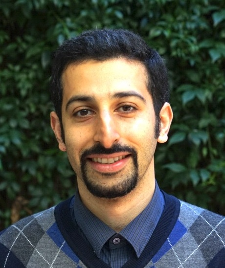

Research Assistant Professor
Department of Computer Science
University of Colorado Boulder
Email: saber.jafarpour@colorado.edu
I am a Research Assistant Professor in the Department of Computer Science at the University of Colorado Boulder. Before joining CU Boulder, I was a Postdoctoral Research Fellow at the Institute for Robotics and Intelligent Machines at the Georgia Institute of Technology, where I worked with Sam Coogan. I previously held a postdoctoral research fellowship at the Center for Control, Dynamical Systems, and Computation at the University of California, Santa Barbara, where I worked with Francesco Bullo. I received my Ph.D. in Mathematics from Queen's University under the supervision of Andrew Lewis.
My research lies at the intersection of control theory and autonomous systems, with applications to robotics and cyber-physical systems. My primary research interests include:
